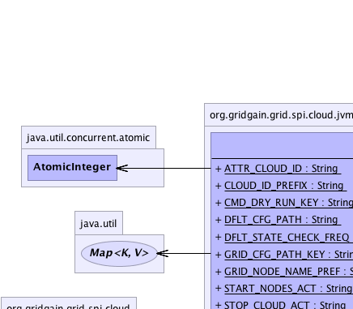
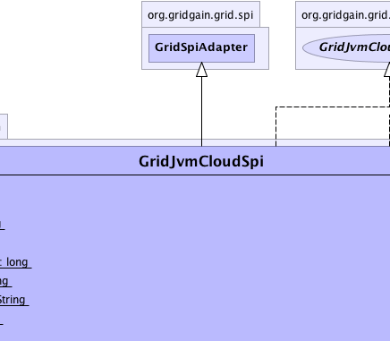
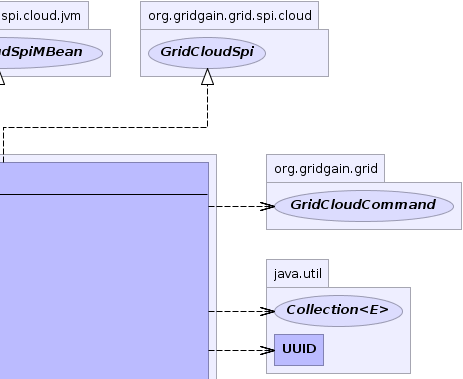
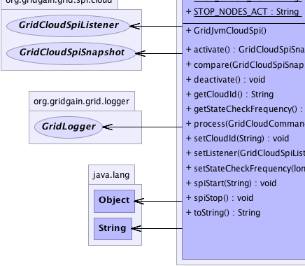
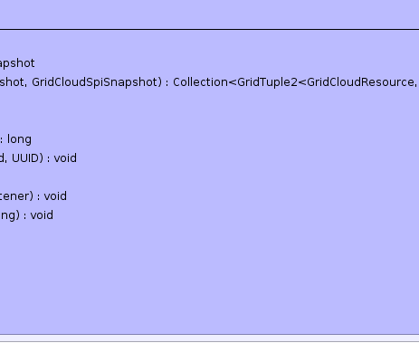
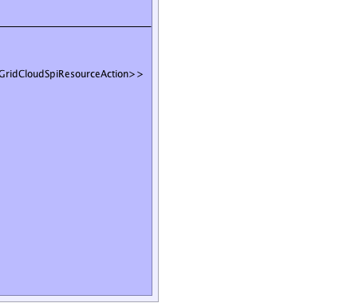

org.gridgain.grid.spi.GridSpiAdapter
org.gridgain.grid.spi.cloud.jvm.GridJvmCloudSpi
org.gridgain.grid.spi.GridSpiAdapter
org.gridgain.grid.spi.cloud.jvm.GridJvmCloudSpi
|
GridGain™ 3.1.1c
Community Edition |
|||||||||
| PREV CLASS NEXT CLASS | FRAMES NO FRAMES | |||||||||
| SUMMARY: NESTED | FIELD | CONSTR | METHOD | DETAIL: FIELD | CONSTR | METHOD | |||||||||
java.lang.Object
@GridSpiInfo(author="GridGain Systems, Inc.",
url="www.gridgain.com",
email="support@gridgain.com",
version="3.1.1c.13062011")
@GridSpiMultipleInstancesSupport(value=true)
public class GridJvmCloudSpi
This class defines local JVM-based implementation for GridCloudSpi. It supports
three actions - starting and stopping GridGain nodes and stopping entire cloud
(see below for details).
This class is intended for testing purposes. It is ideal for developing and testing cloud-related functionality as all nodes will be spawn locally in-VM meaning that they can be debugged locally and without wasting paid resources on actual clouds such as Amazon EC2 or Rackspace.
One caveat of this SPI implementation is that all nodes started by this SPI will have
unique grid name. In most cases it should not affect the user's
logic.
GridJvmCloudSpi.setCloudId(String))GridJvmCloudSpi.setStateCheckFrequency(long))| Command | Parameter | Description |
|---|---|---|
|
Add Node(s)
Adds one or more GridGain nodes
started locally in-VM. Note that each node will
have unique |
GridCloudCommand.action() |
Should return GridJvmCloudSpi.START_NODES_ACT |
GridCloudCommand.number() |
Value greater than zero indicating how many nodes to start. If less or equal to zero exception is thrown. | |
GridCloudCommand.resources() |
Value should be empty or null. if not empty or null then
collection will be ignored with a warning.
|
|
GridCloudCommand.parameters() |
Command parameters map. May be null or empty. If not SPI handles the following keys:
|
|
|
Remove Node(s)
Removes one or more GridGain nodes previously started locally in-VM. |
GridCloudCommand.action() |
Should return GridJvmCloudSpi.STOP_NODES_ACT |
GridCloudCommand.number() |
Value greater or equal to zero. The value indicates how many nodes to stop. See below for further details. | |
GridCloudCommand.resources() |
If null or empty collection the implementation will randomly select
nodes to stop (in this case GridCloudCommand.number() should return value greater than zero;
if not then exception is thrown).
Otherwise, collection of resources with If cloud has less nodes than it is required to stop by a command then exception is thrown.
If at least on element in the collection is not of |
|
GridCloudCommand.parameters() |
Command parameters map. May be null or empty. If not, SPI handles the following keys:
|
|
|
Stop Cloud
Removes all GridGain nodes previously started locally in-VM. If cloud is empty this command is no-op. |
GridCloudCommand.action() |
Should return GridJvmCloudSpi.STOP_CLOUD_ACT |
GridCloudCommand.number() |
Any value. Will be ignored silently. | |
GridCloudCommand.resources() |
Any value. Will be ignored silently. | |
GridCloudCommand.parameters() |
Command parameters map. May be null or empty. If not, SPI handles the following keys:
|
If command's action is not recognized exception is thrown by SPI.
GridJvmCloudSpi cloudSpi = new GridJvmCloudSpi();
// Override default cloud ID.
cloudSpi.setCloudId("myCloud");
GridConfigurationAdapter cfg = new GridConfigurationAdapter();
// Override default cloud SPI.
cfg.setCloudSpi(cloudSpi);
// Starts grid.
G.start(cfg);
<bean id="grid.custom.cfg" class="org.gridgain.grid.GridConfigurationAdapter" singleton="true">
...
<property name="cloudSpi">
<bean class="org.gridgain.grid.spi.cloud.jvm.GridJvmCloudSpi">
<property name="cloudId" value="myCloud"/>
</bean>
</property>
...
</bean>

For information about Spring framework visit www.springframework.org
| Wiki | |
| Forum |
GridCloudSpi
|  |  |  |
|  |  |  |
| Field Summary | |
|---|---|
static String |
ATTR_CLOUD_ID
JVM cloud ID node attribute. |
static String |
CLOUD_ID_PREFIX
Cloud ID prefix for unnamed clouds. |
static String |
CMD_DRY_RUN_KEY
Dry-run command parameter. |
static String |
DFLT_CFG_PATH
Default configuration path. |
static long |
DFLT_STATE_CHECK_FREQ
Default state check frequency in milliseconds. |
static String |
GRID_CFG_PATH_KEY
Grid configuration path command parameter. |
static String |
GRID_NODE_NAME_PREF
Grid node name prefix. |
static String |
START_NODES_ACT
Start nodes action |
static String |
STOP_CLOUD_ACT
Stop entire cloud action |
static String |
STOP_NODES_ACT
Stop nodes action |
| Constructor Summary | |
|---|---|
GridJvmCloudSpi()
|
|
| Method Summary | |
|---|---|
GridCloudSpiSnapshot |
activate()
Activates SPI. |
Collection<GridTuple2<GridCloudResource,GridCloudSpiResourceAction>> |
compare(GridCloudSpiSnapshot oldSnp,
GridCloudSpiSnapshot newSnp)
Compares two snapshots and return delta (potentially empty but never null). |
void |
deactivate()
Deactivates SPI. |
String |
getCloudId()
Gets cloud ID. |
long |
getStateCheckFrequency()
Gets frequency of state check in milliseconds. |
void |
process(GridCloudCommand cmd,
UUID cmdExecId)
Executes cloud command. |
void |
setCloudId(String cloudId)
Sets Cloud ID. |
void |
setListener(GridCloudSpiListener lsnr)
Sets or unsets (if null) cloud listener. |
void |
setStateCheckFrequency(long stateCheckFreq)
Sets frequency to check cloud state change. |
void |
spiStart(String gridName)
This method is called to start SPI. |
void |
spiStop()
This method is called to stop SPI. |
String |
toString()
|
| Methods inherited from class org.gridgain.grid.spi.GridSpiAdapter |
|---|
assertParameter, configInfo, createSpiAttributeName, getAuthor, getConsistentAttributeNames, getGridGainHome, getLocalNodeId, getName, getNodeAttributes, getSpiContext, getStartTimestamp, getStartTimestampFormatted, getUpTime, getUpTimeFormatted, getVendorEmail, getVendorUrl, getVersion, injectables, onContextDestroyed, onContextInitialized, registerMBean, setJson, setName, startInfo, startStopwatch, stopInfo, unregisterMBean |
| Methods inherited from class java.lang.Object |
|---|
clone, equals, finalize, getClass, hashCode, notify, notifyAll, wait, wait, wait |
| Methods inherited from interface org.gridgain.grid.spi.GridSpi |
|---|
getName, getNodeAttributes, onContextDestroyed, onContextInitialized |
| Methods inherited from interface org.gridgain.grid.spi.GridSpiManagementMBean |
|---|
getAuthor, getGridGainHome, getLocalNodeId, getName, getStartTimestamp, getStartTimestampFormatted, getUpTime, getUpTimeFormatted, getVendorEmail, getVendorUrl, getVersion |
| Field Detail |
|---|
public static final String START_NODES_ACT
public static final String STOP_NODES_ACT
public static final String STOP_CLOUD_ACT
public static final String GRID_CFG_PATH_KEY
public static final String CMD_DRY_RUN_KEY
public static final String CLOUD_ID_PREFIX
public static final long DFLT_STATE_CHECK_FREQ
public static final String ATTR_CLOUD_ID
public static final String GRID_NODE_NAME_PREF
public static final String DFLT_CFG_PATH
| Constructor Detail |
|---|
public GridJvmCloudSpi()
| Method Detail |
|---|
public String getCloudId()
getCloudId in interface GridCloudSpigetCloudId in interface GridJvmCloudSpiMBean@GridSpiConfiguration(optional=false) public void setCloudId(String cloudId)
cloudId - Cloud ID.public long getStateCheckFrequency()
getStateCheckFrequency in interface GridJvmCloudSpiMBean@GridSpiConfiguration(optional=true) public void setStateCheckFrequency(long stateCheckFreq)
stateCheckFreq - Frequency in milliseconds.
public void setListener(@Nullable
GridCloudSpiListener lsnr)
null) cloud listener.
setListener in interface GridCloudSpilsnr - Cloud listener to set (or unset if null).
public void spiStart(@Nullable
String gridName)
throws GridSpiException
spiStart in interface GridSpiGridSpiException - Throws in case of any error during SPI start.gridName - Name of grid instance this SPI is being started for
(null for default grid).
public void spiStop()
throws GridSpiException
Note that this method can be called at any point including during recovery of failed start. It should make no assumptions on what state SPI will be in when this method is called.
spiStop in interface GridSpiGridSpiException - Thrown in case of any error during SPI stop.
public GridCloudSpiSnapshot activate()
throws GridSpiException
activate in interface GridCloudSpiGridSpiException - If any exception occurs.
public void deactivate()
deactivate in interface GridCloudSpi
public void process(GridCloudCommand cmd,
UUID cmdExecId)
throws GridSpiException
process in interface GridCloudSpiGridSpiException - If any exception occurs.cmd - Command to execute.cmdExecId - Command execution ID.public Collection<GridTuple2<GridCloudResource,GridCloudSpiResourceAction>> compare(GridCloudSpiSnapshot oldSnp, GridCloudSpiSnapshot newSnp)
null).
compare in interface GridCloudSpioldSnp - Old snapshot.newSnp - New snapshot.
null but may
return an empty collection if snapshots are identical.public String toString()
toString in class Object
|
GridGain™ 3.1.1c
Community Edition |
|||||||||
| PREV CLASS NEXT CLASS | FRAMES NO FRAMES | |||||||||
| SUMMARY: NESTED | FIELD | CONSTR | METHOD | DETAIL: FIELD | CONSTR | METHOD | |||||||||
|
GridGain = High Performance Cloud Computing
|
|

|
|